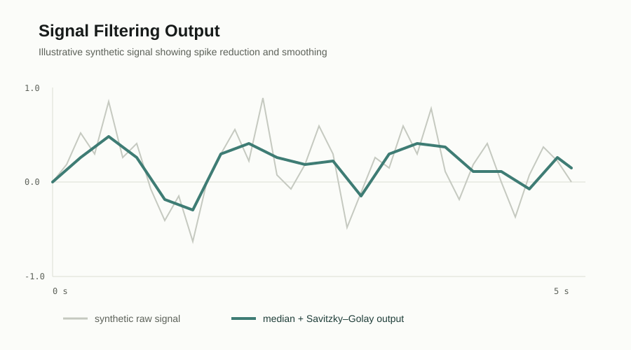
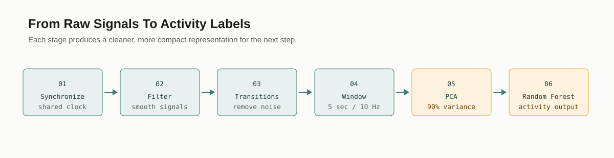
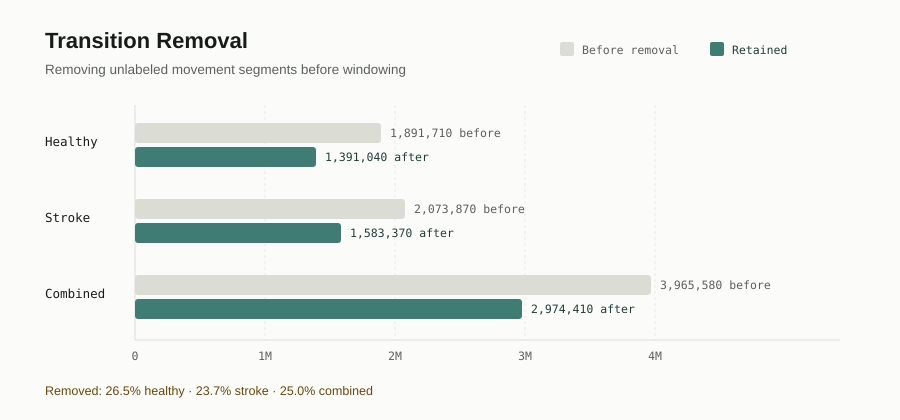
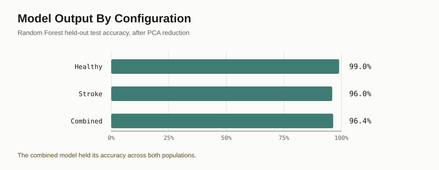
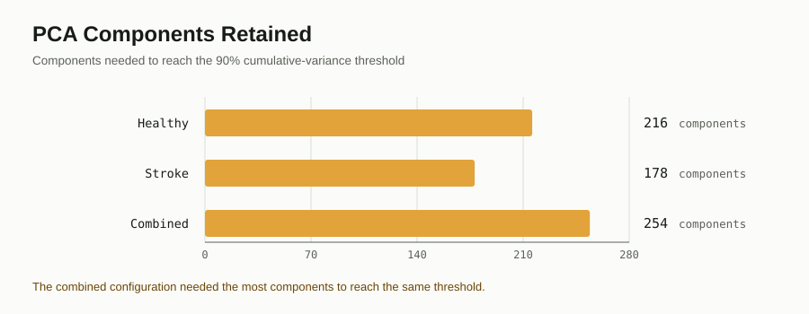
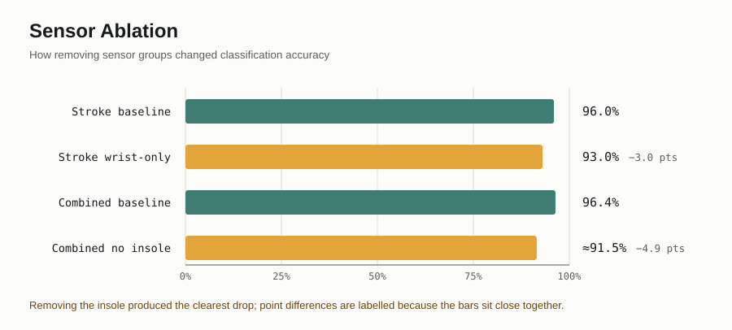

ParaSensor Activity Classification
Emeis Internship — Wearable-Sensor Data Processing & Machine-Learning Pipeline
July – August 2026
A signal-processing and classification pipeline for distinguishing everyday activities from synchronized wearable-sensor recordings across healthy and stroke-patient populations.
NDA-safe overview
This page intentionally contains no participant identifiers, raw recordings, personal health information, local file paths, or proprietary source code. The details below are limited to aggregate results and high-level methodology.
The project used wearable accelerometer, gyroscope, and insole-pressure signals to classify activities such as lying, sitting, standing, walking at different speeds, and stepping in place.
The same processing workflow was run for healthy patients, stroke patients, and a combined population. The combined model created one shared feature space while accounting for differences between the two groups.
Pipeline
-
Synchronize Sensor Streams
Activity timing information was used to align body-worn and insole signals onto a shared 90 Hz clock. Insole channels were resampled before the streams were combined into a wide per-subject representation.
-
Filter And Prepare Signals
Sensor channels were cleaned with a median filter followed by Savitzky–Golay smoothing to reduce spikes and noise. Missing values were handled during filtering and preserved as missing afterward so genuine data gaps were not silently replaced.
-
Remove Transitions And Create Windows
Samples between labeled activities were removed so transition movements did not become training examples. The remaining activity signals were divided into overlapping 5-second windows and downsampled from 90 Hz to 10 Hz for feature representation.
-
Reduce The Feature Space
Windowed features were standardized using the training data and reduced with Principal Component Analysis. The number of components was selected to explain 90% of the variance, with visual diagnostics used to inspect activity separation.
-
Train And Evaluate The Classifier
A class-balanced Random Forest classifier was trained on the PCA representation and evaluated with a held-out test split, activity-level classification metrics, and confusion matrices ordered by activity semantics.
Pipeline Outputs
These charts show the intermediate outputs and aggregate evaluation results that built the project from synchronized sensor streams to a tested activity classifier. They use report-level summaries only; no raw recordings or participant-level rows are shown.






Population Comparison
The pipeline was applied to three aggregate dataset configurations. Healthy and stroke populations each included 19 subjects; the combined configuration included 38 subjects. Sensor layouts, side labels, and walking-speed labels were reconciled before the combined model was trained.
| Configuration | Subjects | Input features | PCA components | Test accuracy |
|---|---|---|---|---|
| Healthy patients | 19 | 2,302 | 216 | 99.0% |
| Stroke patients | 19 | 2,203 | 178 | 96.0% |
| Both combined | 38 | 2,202 | 254 | 96.4% |
These are aggregate model results from the project report. They describe activity classification performance and should not be interpreted as clinical predictions or as evidence about any individual.
Sensor Ablation
Feature-ablation experiments tested how classification changed when groups of sensors were excluded. In the stroke configuration, removing the insole produced little change from the 96% baseline, while using wrist-only signals after removing other sensor groups reduced accuracy to 93%. In the combined configuration, removing the insole reduced accuracy to approximately 91.5%, suggesting that insole data provided a meaningful boost when both populations were modeled together.
Interpretation note
One combined-dataset ablation reused baseline predictions after dropping ankle columns instead of retraining the model, so that result was not treated as a valid ankle-removal experiment. This was documented as a data-quality limitation rather than presented as a definitive sensor comparison.
My Contribution
I contributed to the wearable-sensor processing and modeling workflow, including data preparation, signal-processing steps, windowed feature construction, dimensionality reduction, classifier evaluation, and sensor-configuration experiments. I also helped compare the healthy, stroke, and combined configurations and document assumptions and limitations in the pipeline.
NDA-protected data and code; aggregate results only.